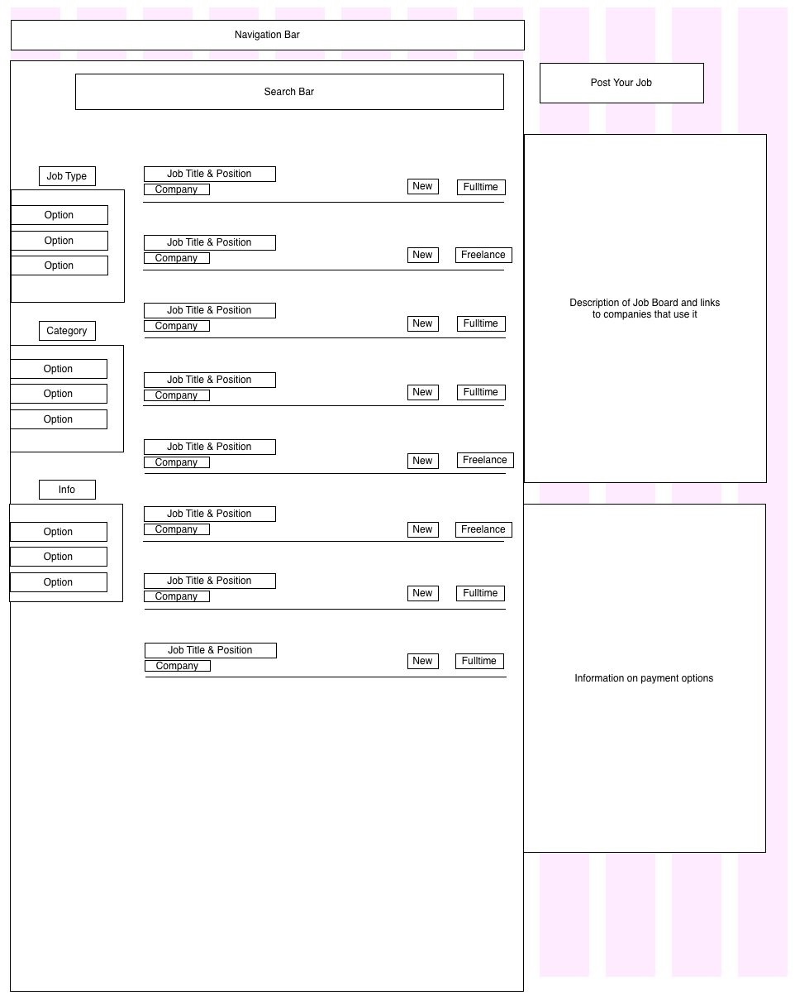

A List Apart
A List Apart’s goal is to provide interesting and informative articles on the topic of web design and development to its users. I picked the main index page to wireframe. The had to design a site that would keep the users focus on the content from the authors. They use the main image to draw in readers to the articles on the site. They also make their ads very unobtrusive to the user to minimize distractions.
Smashing Magazine
Smashing Magazine’s Job Board’s goal is to help developers and designers to find a job. They provide options to help better your job hunting results. They also post in the listing if its a new listing and what the type of job either full-time or freelance. They keep the listing board clean as to focus on the job itself and not the salary or requirements. If the title of the job sounds like something you want to do, you can click on it and find out all the information provided from the company.

Lifehacker
The Lifehacker site goal is to get readers. They have tons of writers and every few hours the posts are updated. They have a design that lets you spend countless hours scrolling through all their articles reading bits and pieces until something perks your interest. The layout is a bit backwards, using the left side for a sidebar and the right side for the main content. A lot of the time the ads are very prevalent and can get in the way of the content. Being as this has been kept the same for some time, I assume that they are making enough revenue to not move the ads around.